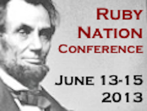

Here in DC, we're about more than just politics and monuments, we have a strong technology community that loves Ruby and Rails.
Come to learn or teach about building web applications with Ruby on Rails.
Details Below!
We host meetups every 2nd and 4th Tuesday of the month.
These are casual hacker-style events for anyone to come learn, code, and have fun!
Anyone is welcome at the meetups.
CHECK DATES & RSVP HEREWe are so excited to pair up with RubyNation for our June workshop!
RubyNation is THE conference for Rubyists all along the Mid-Atlantic and East Coast region. If you haven't registered, sign-up today!
Be sure to check out RubyNation! 
You learn designing, prototyping and coding with the help from our coaches.
You need your own laptop, curiosity and a sprinkle of imagination!
Want to help? We are looking for sponsors, volunteers and Rails coaches. Email us Or check out our Sponsorship Options
| 6:00pm - 9:00pm |
Installation Party/Meetup Get TogetherGet know your coaches and peers. Bring your laptop so we can help you install Ruby on Rails using the install guide if you haven't already installed them. Location: LivingSocial, 1005 7th Street NW, Washington DC |
|---|
*Please note exact times for each section are not set in stone and may change as the event gets closer*
| 8:30am - 9:15am |
RegistrationIf you haven't had a chance to install Ruby and Rails before the workshop you can get help from coaches at registration using the install guide. |
|---|---|
| 9:15am - 9:30am |
Welcome and Intro'sWe will talk about our awesome sponsors, the structure of the day, and designing web applications. You will also get to meet your team and coach for the day. |
| 9:30am - 12:00pm |
Learn Ruby, Rails, and Start Coding
We will do an overview of Ruby then start coding with Ruby.
|
| 12:00pm - 1:00pm |
LunchReward yourself for a successful morning with some grub. |
| 1:00pm - 1:30pm |
ReviewWe will come back together review what you've been building and answer any questions.
|
| 1:30pm - 4:15pm |
Complete Your Rails Apps
You will continue to work in your groups adding features and style to your Rails applications.
|
| 4:15pm - 5:30pm |
Get Inspired!We will be having a couple lightning talks from female leaders in the Ruby community, CTOs, and develoeprs, to help you keep going with the skills you gain at the workshop. Talk topics include: Becoming Your Own CTO, The Lean Startup Method, Grit, and more! |
| 6:00pm - 8:00pm |
AfterpartyTreat Yo' Self after a day of hard work and building your first Rails app, you deserve it! Location TBA, time subject to change |
| All Day |
RubyNation ConferenceAttendees and coaches are encouraged to attend the RubyNation conference to keep learning and coding! |
|---|
Applications are now closed
Questions regarding applications? railsgirlsdc@gmail.com
Location:
RubyNation
Silver Spring Civic Building
One Veteran's Place
Silver Spring, MD 20910
The second workshop was part of DCWEEK and held in Microsoft's Offices. This workshop was attended by about 40 participants, 12 coaches and a few organizers and volunteers.
Held at LivingSocial's office, the first Rails Girls DC received over 170 applications! This workshop was attended by about 40 participants, 16 coaches and a few organizers and volunteers.
The Two X-Factor by Pamela Overman
Recap: Rails Girls Washington DC by Karen Gillison
Rails Girls DC - September 2012 by Veronica Erb
Rails Girls DC - Where It All Clicked! by Emily Williamson
Rails + Girls = A Better Community by Intridea
Storify Story About Rails Girls DC #2 by Liz Steininger